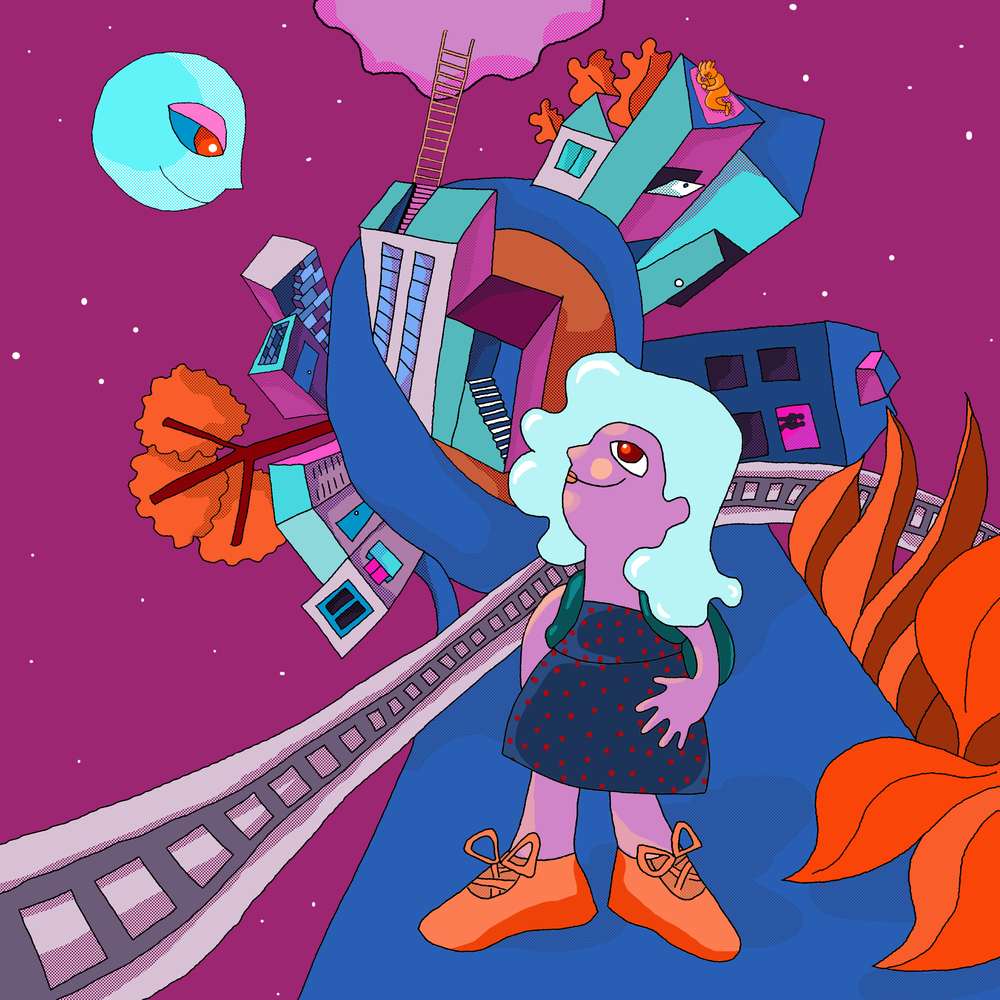

Neydalid Molero
"Yo soy, yo soy, yo soy, yo soy Soy agua, playa, cielo, casa blanca Soy mar Atlántico, viento de América Soy un montón de cosas santas Mezclado con cosas humanas Como te explico cosas mundanas"
(*canción de Piero)
"Yo soy, yo soy, yo soy, yo soy Soy agua, playa, cielo, casa blanca Soy mar Atlántico, viento de América Soy un montón de cosas santas Mezclado con cosas humanas Como te explico cosas mundanas"
(*canción de Piero)
Soy una inmigrante venezolana, vengo de la ciudad donde nací, al lado de un enorme lago salobre.
Llevar a un nivel más estructurado mi proceso de aprendizaje y de hacer networking.